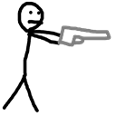

Savāc piecus mērkaķus. Spied uz mērkaķi, lai iegūtu punktus.

Uzvaras skaņa:
Dziesma no: Tyler, The Creator.
Piedalās: Roy Ayers, Syd Bennett, Jameel Kirk Bruner, Samantha Nelson, Tiffany Palmer, Onitsha Shaw un Kali Uchis.
℗ 2025 & © 2015 Columbia Records, divīzija no Sony Music Entertainment.
Punkti: 0